| HOME | WILLOW-WING OUTPOST : FEATURES |
|---|
| GAME WORLD | |
|---|---|
| Explore | Traverse multiple biomes. Surprises on every corner!
 
 |
| Collect | collect items that vary by biome.
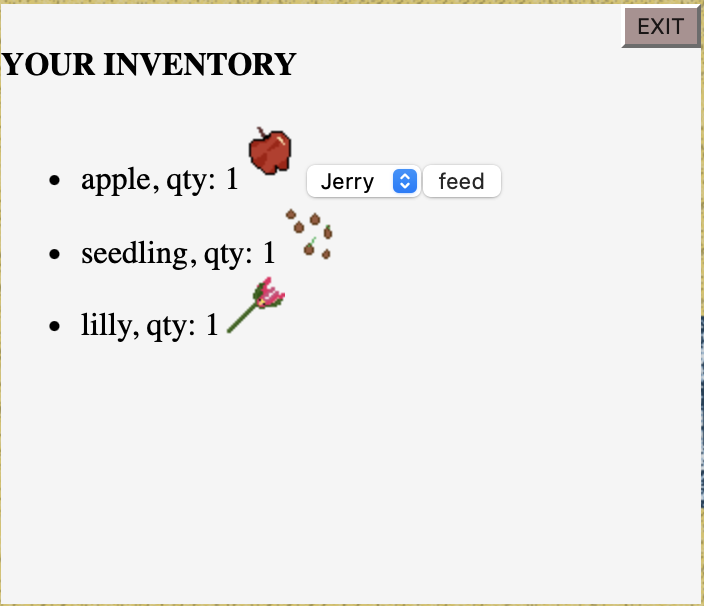 |
| Wild Horses | The game world is populated by dynamically recolored wild horses that can all be captured and tamed by the player. You never know what you might see! All horses have a genetic string, which is read by the code to determine how horse coloring should happen! 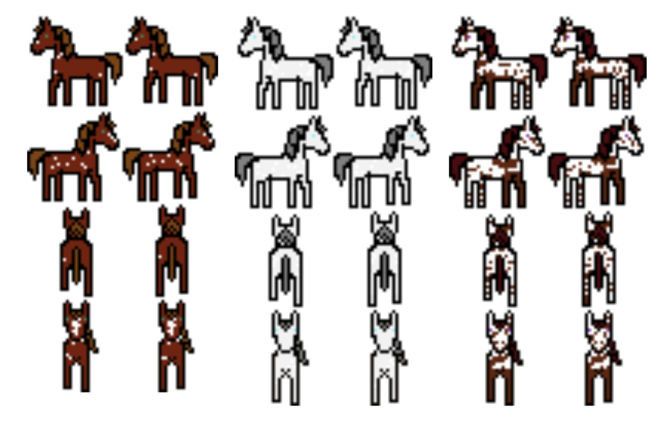 |
| Catch Wilds | Any horse you see in the world, you can attempt to capture! Walk over a tile to trigger the wild-catching minigame event and try your wrangling skills.
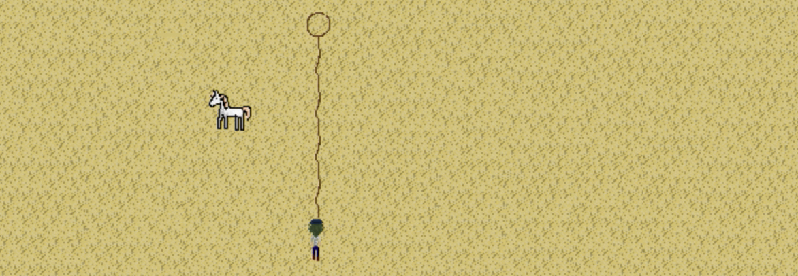 |
| PLAYER HORSES | |
|---|---|
| Player Stable | View all the horses you've caught in the stable interface. Click info to see unique personality stats, bond, the tack the horse is wearing, and more.
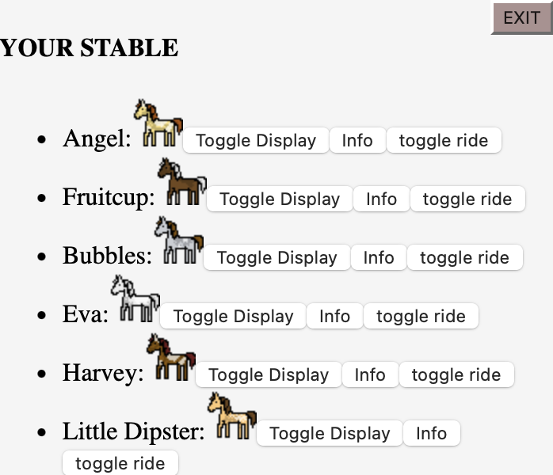 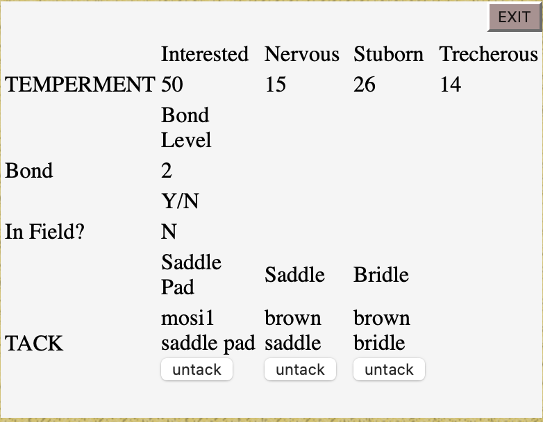 |
| Feed | Feed horses with the food items you've bought or collected to raise trust.
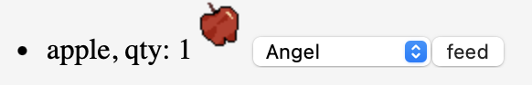 |
| Ride! | Mount up from the stable menu and traverse the outpost twice as fast as you would on foot!
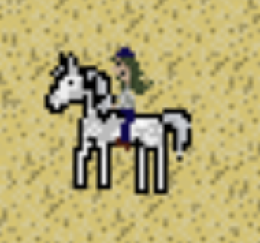 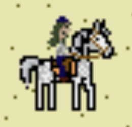 |
| Pasture | Want to display your ponies out in the field? Click 'toggle display' in the stable menu and watch your horses play in your pasture.
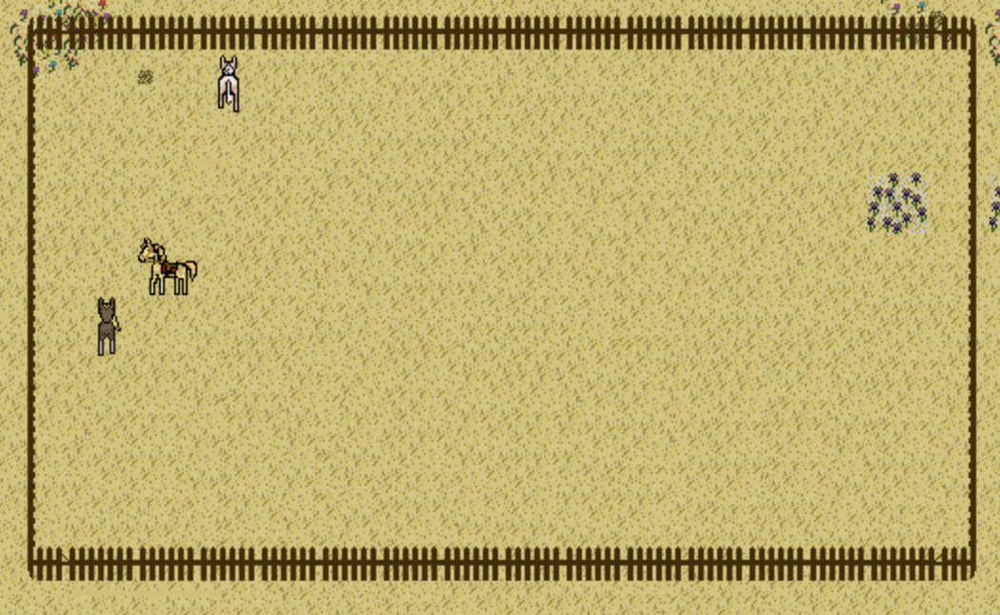 |
| Tack up | Want a smoother ride? To ride in style? Purchase tack from shops and apply them to horses in the inventory menu. All tack items can be removed and moved back into your inventory through the info menu in the player stable tab.
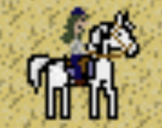 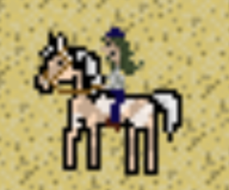 |
| Breed | Apperance of horses in the outpost is dictated by their genetic string. Breed horses together to discover hidden traits and craft your dream herd!
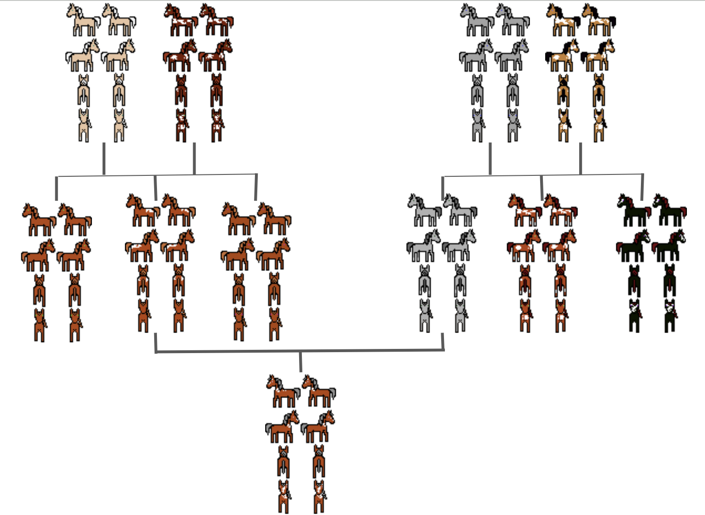 |
| NPCs | |
|---|---|
| NPCs | Non-player characters reside in homes all over the game world. Give their door a knock to meet your neighbors.
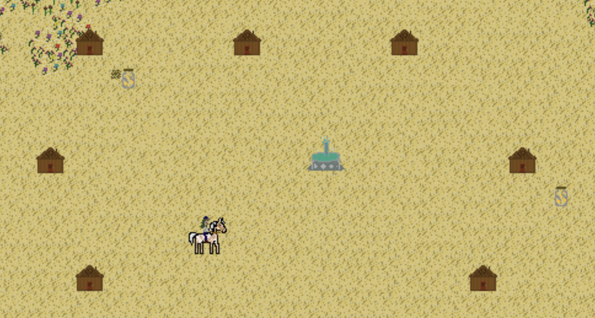 |
| Quests | Some NPCs will send you on quests for items or have requests for specific horses. Not everyone wants a bumpy ride.
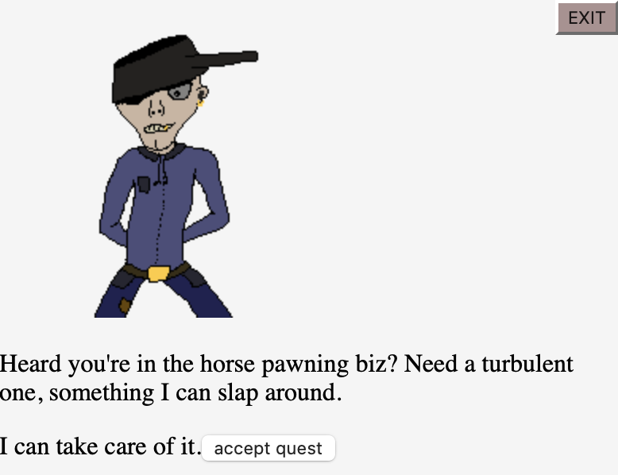 |
| Relationships | The more quests you complete for villagers, the more they will like you. A higher level of friendship will unlock new quests and dialogue. Find out their secrets, dreams, and desires!
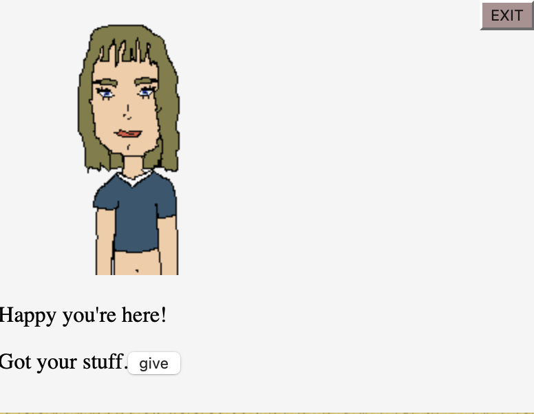 |
| GAME SAVE FILES | |
|---|---|
| Load/Save Game | Willow-Wing Outpost uses local storage to save game data. Save by clicking the 'save' option in the top bar menu. Load a save on the homescreen, or reset your outpost. |
| What saves? | Everything! Player horses, tack on horses, whether or not the horse is in the field, inventory, including tack items, NPC active quests and relationship to the player, player money will all be retained when you save your game. |